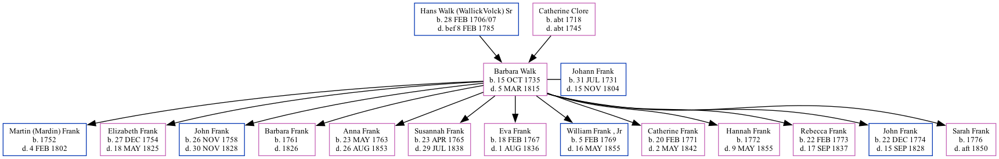

Barbara Frank (née Walk) 1735 - 1815
[ Home ] | [ Surnames Index ] | [ Family History ]
The daughter of Hans Walk (Wallick\Volck) Sr and Catherine Clore, Barbara was the 7 times great-grandmother of Jay Hannah, was born in Germanna, Orange Co., Virginia on Oct 15, 1735 and married Johann Frank (with whom she had 13 children: Martin (Mardin), Elizabeth, John, Barbara, Anna Maria, Susannah, Eva, William , JR, Catherine, Hannah, Rebecca, John Peter and Sarah Catherine) in Rowan Co., North Carolina in 1751.
She died on Mar 5, 1815 in Davidson Co., North Carolina1.
Parents
- Hans Martin Walk (Wallick\Volck) was born on Feb 28, 1707
- Catherine was born c. 1718
Children
- Martin (Mardin) was born in 1752
- Elizabeth was born on Dec 27, 1754
- John was born on Nov 26, 1758
- Barbara was born in 1761
- Anna Maria was born on May 23, 1763
- Susannah was born on Apr 23, 1765
- Eva was born on Feb 18, 1767
- William , JR was born on Feb 5, 1769
- Catherine was born on Feb 20, 1771
- Hannah was born in 1772
- Rebecca was born on Feb 22, 1773
- John Peter was born on Dec 22, 1774
- Sarah Catherine was born in 1776
Citations
Family Tree

Data (GEDCOM) maintained by Jay Weston Hannah, Omaha, Nebraska, USA.
Website generated by Ged2Site. Last updated on Jun 30, 2025.